Grafurile au numeroase aplicații în diverse domenii: proiectarea circuitelor electrice, determinarea celui mai scurt drum dintre două localități, rețelele sociale (ex. Facebook), etc.
Primele rezultate legate de teoria grafurilor au fostobținute de matematicianul Leonard Euler, cel care a studiat Problema podurilor din Königsberg, din imaginea de mai jos. A demonstrat că problema nu are soluție, iar în onoarea lui o categorie specială de grafuri au fost numite grafuri euleriene.
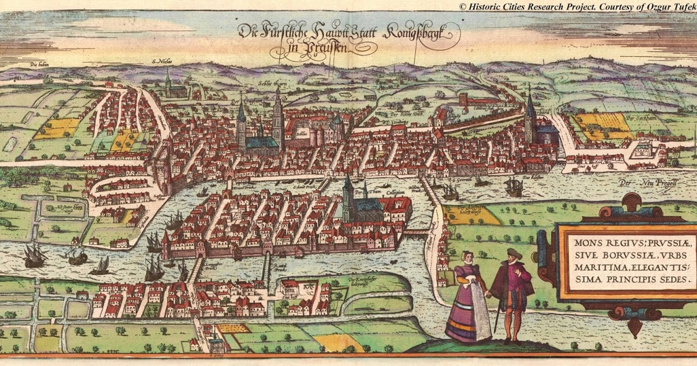Terminologie
Definiție: Se numește graf neorientat o pereche ordonată de mulțimi G=(X,U), unde:
X este o mulțime finită și nevidă de elemente numite vârfuri sau noduri;
U este o mulțime finită de submulțimi cu două elemente din X, numite muchii.
Vom nota în continuare vârfurile cu valori între 1 și n – unde n este număru de vârfuri din graf, iar muchiile cu [x,y] sau (x,y), unde x și y sunt vârfuri și se numesc extremitățile muchiei.
Un vecin al unui vârf x este orice vârf y cu proprietatea că există muchia [x,y].
Două vârfuri între care există muchie se numesc adiacente.
Două muchii sunt incidente dacă au o o extremitate comună. Un vârf este incident cu o muchie dacă vârful este extremitate a acelei muchii.
Mulțimea muchiilor are proprietatea de simetrie: dacă [x,y] este muchie, atunci și [y,x] este muchie.
Conform definiției:
într-un graf neorientat nu există muchie de la un vârf la el însuși;
intre două vârfuri distincte există cel mult o muchie.
Exemplu: Fie G=(X,U), unde:
X={1,2,3,4,5,6,7,8,9,10,11}
U={[1,4],[1,5],[2,3],[2,8],[3,11],[4,5],[4,9],[7,10],[8,11]}
Gradul unui vârf
Definiție Într-un graf neorientat se numește grad al unui vârf numărul de vârful adiacente cu acesta (sau numărul de muchii incidente cu acesta). Gradul unui vărf x se notează d(x) (degree).
Observații:
un vârf cu gradul 0 se numește izolat. În graful de mai sus, vârful 6 este izolat.
un vârf cu gradul 1 se numește terminal. În graful de mai sus, vârful 9 este vârf terminal.
gradul maxim al unui vârf într-un graf cu n vârfuri este n-1.
Teoremă: Într-un graf neorientat, suma gradelor tuturor vârfurilor este dublul numărului de muchii.
Consecințe:
Suma gradelor tuturor vârfurilor este număr par.
Într-un graf neorientat, numărul de vârfuri de grad impar este întotdeauna par.
Întrebare: Este posibil ca într-un grup de 5 persoane, fiecare persoană să aibă exact 3 prieteni?
Reprezentarea grafurilor neorientate
Matricea de adiacență
Pentru un graf neorientat G=(X,U) cu n vârfuri, matricea de adiacență este o matrice cu n linii și n coloane și elemente din {0,1}, cu:
Exemplu: Pentru graful neorientat de mai jos avem următoarea matrice de adiacență:
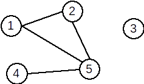 $$ A = \left( \begin{array}{ccccc} 0 & 1 & 0 & 0 & 1 \\ 1 & 0 & 0 & 0 & 1 \\ 0 & 0 & 0 & 0 & 0 \\ 0 & 0 & 0 & 0 & 1 \\ 1 & 1 & 0 & 1 & 0 \end{array} \right) $$Observații:
matricea de adiacență este simetrică față de diagonala principală;
elementele de pe diagonala principală sunt 0;
gradul unui vârf x este egal cu numărul de elemente 1 de pe linia (sau coloana) x;
suma tuturor elementelor din matricea de adiacență a unui graf neorientat este egală cu dublul numărului de muchii din graf.
Lista de muchii
Lista de muchii a unui graf neorientat reprezintă o mulțime ce conține toate muchiile din graf.
Pentru graful alăturat, lista de muchii este:
U={[1,2],[1,5],[2,5],[4,5]}
Pentru reprezentarea în memorie putem folosi:
un tablou unidimensional cu elemente de tip struct {int I,J;}
două tablouri unidimensionale cu elemente de tip int
o listă alocată dinamic
etc.
Liste de adiacențe (de vecini)
Pentru un graf neorientat cu G=(X,U) se va memora numărul de vârfuri n și apoi, pentru fiecare vârf x, lista vârfurilor adiacente cu x, adică a vârfurilor y cu proprietatea că există muchia [x,y].
Pentru graful alăturat, listele de adiacență sunt:
1: 2 5
2: 1 5
3: vidă
4: 5
5: 1 2 4
La reprezentarea în memorie trebui avut în vedere că dimensiunile listelor de vecini sunt variabile. De aceea, este neeficientă utilizarea unor tablouri alocate static. Astfel, putem folosi:
un șir de n tablouri unidimensionale alocate dinamic;
un șir de n vectori din STL;
un șir de n liste simplu (dublu) înlănțuite alocate dinamic.
Graf parțial. Subgraf. Graf complementar
Definiție. Fie G=(X, U) un graf neorientat. Se numeşte graf parțial al grafului G, graful neorientat G1=(X, U1), unde U1 ⊆ U.
Din definiție rezultă:
Un graf parțial al unui graf neorientat G=(V,U), are aceeaşi mulțime de vârfuri ca şi G, iar mulțimea muchiilor este o submulțime a lui U sau chiar U.
Fie G=(X, U) un graf neorientat. Un graf parțial al grafului G se obține păstrând vârfurile şi
eliminând eventual nişte muchii (se pot elimina şi toate muchiile sau chiar nici una).
Definiție. Fie G=(X, U) un graf orientat. Se numeşte subgraf al grafului G graful neorientat G1=(X1,U1) unde X1 ⊆ X iar U1 conține toate arcele din U care au extremitățile în X1.
Din definiție rezultă:
Fie G=(X,U) un graf orientat. Un subgraf al grafului G, se obține ştergând eventual anumite
vârfuri şi odată cu acestea şi muchiile care le admit ca extremitate (nu se pot şterge toate vârfurile deoarece s-ar obține un graf cu mulțimea vârfurilor vidă).
Definiție. Fie G=(X, U) un graf neorientat. Se numeşte graf complementar al grafului G, graful neorientat G1=(X, U1), cu proprietatea că două vârfuri x și y sunt adiacente în G1 dacă și numai dacă nu sunt adiacente în G.
Exemplu:
| Graful inițial | Graf parțial | Subgraf | Graf complementar |
| 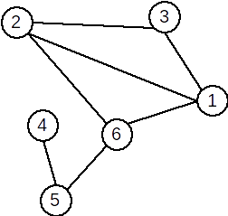 | 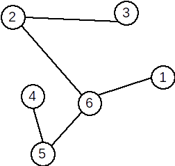 | 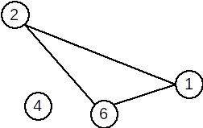 | 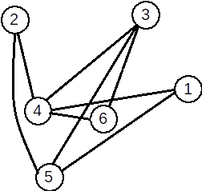 |
S-au eliminat muchiile [1,2], [3,1] |
S-a eliminat vârfurile 3 5 și toate muchiile incidente cu ele. |
O muchie [x,y] apare în graful complementar dacă și numai dacă nu apare în graful inițial. |
Observații. Un graf neorientat oarecare poate avea mai multe grafuri parțiale și subgrafuri, dar un unic graf complementar. Mai precis:
Teoremă: Fie G un graf neorientat cu n vârfuri și m muchii. Atunci:
graful G admite 2m2m grafuri parțiale;
graful G admite 2n–12n–1 subgrafuri;
graful G admite un unic graf complementar.
Justificare:
Să ne amintim că o mulțime cu a elemente are 2a2a submulțimi, inclusiv mulțimea vidă și mulțimea inițială. Atunci:
orice submulțime a mulțimii muchiilor induce un graf parțial. Sunt m muchii, deci 2m2m submulțimi, deci 2m2m grafuri parțiale.
orice submulțime a mulțimii vârfuri induce un subgraf, mai puțin mulțimea vidă – un graf nu poate avea 0 vârfuri. Similar ca mai sus, sunt 2n–12n–1 subgrafuri.
graful complementar este unic determinat, deoarece complementara unei submulțimi față de o mulțime dată este unic determinată.
Graf nul. Graf complet. Graf regulat. Graf bipartit
Definiție: Un graf neorientat se numește graf nul dacă mulțimea muchiilor este vidă.
Într-un graf nul toate vârfurile sunt izolate.
Definiție. Fie G=(X, U) un graf neorientat. Graful G se numește graf complet dacă oricare două vârfuri
distincte ale sale sunt adiacente. Un graf complet cu n vârfuri se notează Kn.
Exemplu: Graful următor este graful K5.
Într-un graf complet cu n vârfuri sunt C2n=n∗(n−1)2Cn2=n∗(n−1)2 muchii și fiecare vârf are gradul n-1.
Propoziție: Sunt 2n∗(n−1)22n∗(n−1)2 grafuri neorientate distincte cu n vârfuri.
Definiție: Un graf în care toate nodurile au acelaşi grad se numește graf regulat.
Exemplu: Graful de mai jos este regulat.
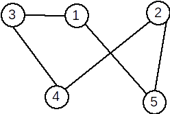Definiţie: Un graf G=(X, U) se numește graf bipartit dacă există două mulţimi nevide A și B astfel încât X=A ∪ B, A ∩ B = ∅ şi orice muchie u a lui G are o extremitate în A iar cealaltă în B. Mulţimile A şi B formează o partiţie a lui X.
Exemplu: Graful următor este bipartit. A={1,2,5,7} și B={3,4,6}.
Definiție: Un graf bipartit G=(X,U) se numește bipartit complet dacă pentru oricare două vârfuri x∈Ax∈A și y∈By∈B, există în graf muchia [x,y]; adică [x,y]∈U[x,y]∈U.
Exemplu: Graful următor este bipartit complet.
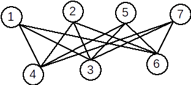Conexitate
Lanț, ciclu
Definiție: Se numește lanț o succesiune de vârfuri L=[x1,x2,⋯xk]L=[x1,x2,⋯xk] cu proprietatea că oricare două vârfuri consecutive sunt adiacente.
Vârfurile x1 şi xk se numesc extremitățile lanțului. Numărul k-1 se numește lungimea lanțului și este numărul de muchii din care este format.
Lanțul care conține numai vârfuri distincte, două câte două, este lanț elementar.
Lanțul care conține numai muchii distincte este lanț simplu. Dacă muchiile unui lanț nu sunt distincte se numește lanț compus.
Definiție: Se numește ciclu un lanț simplu în care primul vârf este identic cu ultimul. Dacă toate vârfurile sunt distincte, mai puțin primul și ultimul, se numește ciclu elementar.
Lungimea unui ciclu este egală cu numărul de muchii din ciclu. Lungimea minimă a unui ciclu este 3.
Un ciclu se numește par dacă lungimea sa este pară, respectiv impar în caz contrar.
Un graf neorientat care nu conține niciun ciclu se numește aciclic.
Exemple: În graful de mai jos:
.png)
[2,4,1,3,5,7] este un lanț elementar
[3,5,7,6,5,1] este un lanț neelementar, dar simplu
[2,3,5,7,6,5,3,1] este un lanț compus
[1,5,3,2,4,1] este un ciclu elementar
[1,3,5,7,6,5,1] este un ciclu neelementar
Graf conex. Componente conexe
Definiție: Un graf neorientat se numește graf conex dacă pentru oricare două vârfuri x și y diferite ale sale, există cel puțin un lanț care le leagă, adică x este extremitatea inițială și y este extremitatea finală.
Un graf cu un singur nod este, prin definiție, conex.
Definiție: Se numește componentă conexă a unui graf G=(X,U) un subgraf H=(Y, V), conex, al lui G
care are proprietatea că nu există nici un lanț în G care să lege un vârf din Y cu un vârf din X – Y.
Subgraful H este conex și maximal cu această proprietate (dacă s-ar mai adăuga un vârf nu ar mai fi conex.)
Un graf este conex dacă admite o singură componentă conexă.
Exemple:
Graful următor este conex:
.png)
Graful următor nu este conex și are 4 componente conexe.
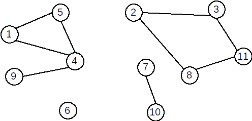Definiție: Un graf este biconex dacă este conex şi pentru orice vârf eliminat subgraful generat îşi păstrează proprietatea de conexitate.
Arbore. Pădure
Definiție: Se numește arbore un graf conex și aciclic.
Exemplu: Graful următor este arbore:
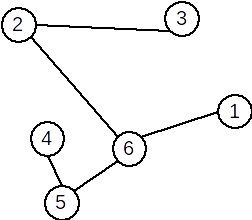Observații:
Un arbore cu n vârfuri are n-1 muchii.
Un arbore este un graf conex și minimal cu această proprietate; dacă s-ar mai elimina o muchie, graful nu ar mai fi conex.
Un arbore este un graf aciclic și maximal cu această proprietate; dacă s-ar mai adăuga o muchie, s-ar obține un ciclu.
Un graf parțial care este arbore se numește arbore parțial.
Un graf care nu conține cicluri se mai numește pădure. Într-o pădure fiecare componentă conexă este arbore.
Graf hamiltonian. Graf eulerian
Definiție: Se numește graf hamiltonian un graf care conține un ciclu hamiltonian. Se numește ciclu hamiltonian un ciclu elementar care conține toate vârfurile grafului.
Într-un graf neorientat, se numește lanț hamiltonian un lanț elementar care conține toate vârfurile grafului.
Într-un graf neorientat, se numește ciclu hamiltonian un ciclu elementar care conține toate vârfurile grafului.
Un graf neorientat se numește graf hamiltonian dacă conține un ciclu hamiltonian.
Exemplu: Graful următor este hamiltonian. Un ciclu hamiltonian este: [1,4,2,3,7,6,5,1]

Teoremă: Un G un graf neorientat. Dacă are n≥3 vârfuri şi gradul oricărui vârf verifică inegalitatea d(x)≥n/2 atunci G este hamiltonian.
Definiție: Se numește graf eulerian un graf care conține un ciclu eulerian. Se numește ciclu eulerian un ciclu care conține toate muchiile grafului.
Într-un graf neorientat, se numește lanț eulerian un lanț simplu în care apare fiecare muchie (fiind lanț simplu, fiecare muchie apare o singură dată).
Într-un graf neorientat, se numește ciclu eulerian un ciclu în care apare fiecare muchie.
Un graf neorientat se numește graf eulerian dacă conține un ciclu eulerian.
Exemplu: Graful următor este eulerian. Un ciclu eulerian este: [1,4,2,1,3,2,7,3,5,7,6,5,1]
.png)
Teoremă: Un graf G = (X,U), fără vârfuri izolate, este eulerian dacă şi numai dacă este conex şi
gradele tuturor vârfurilor sale sunt numere pare.
Parcurgerea grafurilor neorientate
Prin parcurgerea unui graf neorientat se înţelege examinarea în mod sistematic a vârfurilor, plecând dintr-un vârf dat start, astfel încât fiecare vârf accesibil din start pe muchii incidente două câte două să fie vizitat o singură dată. Trecerea de la un vârf x la altul se face prin examinarea, într-o anumită ordine a vecinilor săi.
Parcurgerile grafurilor sunt frecvent utilizate în rezolvarea multor probleme. Animația de mai jos, (preluată de aici) prezintă modul în care se parcurge un labirint folosind mecanisul parcurgerii în adâncime.

Parcurgerea în adâncime
Parcurgerea în adâncime reprezintă explorarea “naturală” a unui graf neorientat. Este foarte asemănătoare cu modul în care un turist vizitează un oraș în care sunt obiective turistice (vârfurile grafului) și căi de acces între obiective (muchiile). Vizitarea orașului va avea loc din aproape în aproape: se pleacă de la un obiectiv de pornire, se continuă cu un obiectiv învecinat cu acesta, apoi unul învecinat cu al doilea, etc.
Parcurgerea în adâncime se face astfel:
Se începe cu un vârf inițial x, care este în acest moment vârf curent.
Vârful x se vizitează. Se determină primul său vecin nevizitat y al lui x, care devine vârf curent.
Apoi se vizitează primul vecin nevizitat al lui y, şi aşa mai departe, mergând în adâncime, până când ajungem la un vârf care nu mai are vecini nevizitați. Când ajungem într-un astfel de vârf, ne întoarcem la “părintele” acestuia – vârful din care am ajuns în acesta.
Dacă acest vârf mai are vecini nevizitați, alegem următorul vecin nevizitat al său și continuam parcurgerea în același mod.
Dacă nici acest vârf nu mai are vecini nevizitați, revenim în vârful său părinte și continuăm în același mod, până când toate vârfurile accesibile din vârful de start sunt vizitate.
Observație
Dacă graful nu este conex, nu ser vor vizita toate vârfurile.
Exemplu
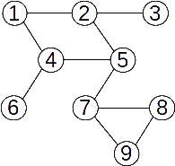Parcurgerea din nodul 5: 5 2 1 4 6 3 7 8 9
Alte exemple de parcurgere pe acest graf:
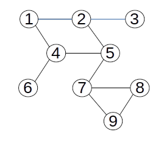Parcurgerea din nodul 1: 1 2 3 5 4 6 7 8 9
Parcurgerea din nodul 2: 2 1 4 5 7 8 9 6 3
Parcurgerea din nodul 9: 9 7 5 2 1 4 6 3 8
Pentru implementarea algoritmului se foloseşte un vector caracteristic pentru memorarea faptului că un anume vârf a fost sau nu vizitat, la un anumit moment al parcurgerii:
v[i] = 0, vârful i nu a fost (încă) vizitat
v[i] = 1, vârful i a fost vizitat
Pentru a determina ordinea în care se parcurg nodurile care pot fi vizitate, se folosește o stivă:
se analizează mereu nodurile adiacent cu nodul din vârful stivei
dacă pentru nodul din vârful stivei găsim un vecin nevizitat, adăugăm nodul vecin pe stivă
dacă pentru nodul din vârful stivei nu mai găsim niciun vecin nevizitat, îl eliminăm de pe stivă
Pentru implementare se poate folosi ca stivă memoria STACK, prin intermediul recursivității.
Implementare C++
Presupunem că graful are n noduri și este prezentat prin matricea de adiacență a. Starea unui vârf (vizitat sau nu) este memorată în vectorul caracteristic v. Toate aceste variabile sunt globale.
void dfs(int k){
v[k]=1; //vizitam varful curent x
for(int i=1;i<=n;i++) // determinam vecinii nevizitati ai lui x
if(a[k][i]==1 && v[i]==0){
dfs(i); // continuam parcurgerea cu vecinul curent i
}
}
Parcurgerea în lățime
Se parcurge vârful de start, apoi vecinii acestuia, apoi vecinii nevizitați ai acestora, etc, până când sunt vizitate toate vârfurile accesibile. Practic, pentru a stabili ordinea de vizitare se folosește o coadă, iar pentru a stabili dacă un vârf a fost sau nu vizitat se foloseşte un vector caracteristic.
Algoritmul este:
adaugăm în coadă vârful inițial și îl vizităm
cât timp coada este nevidă
extragem un element din coadă
determinăm vecinii nevizitați ai vârfului extras, îi vizităm și îi adăugăm în coadă
eliminăm elementul din coadă
Observație
Dacă graful nu este conex, în urma parcurgerii nu se vor vizita toate vârfurile.
Exemplu
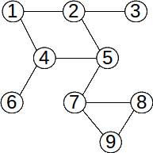Vârfurile grafului au fost parcurse în ordinea: 5 2 4 7 1 3 6 8 9.
Implementare C++
Funcţia de mai jos presupune că un graf cu n vârfuri este memorat prin intermediul matricei de adiacenţă, vectorul x[] reprezintă coada, vectorul v[], aceste variabile fiind declarate global. Funcţia returnează numărul de elemente care au fost vizitate.
int bfs(int start) { int i,k,st,dr; //initializez coada st=dr=1; x[1]=start; v[start]=1;//vizitez varful initial while(st<=dr)//cat timp coada nu este vida { k=x[st];//preiau un element din coada for(i=1;i<=n;i++)//parcurg varfurile if(v[i]==0 && a[k][i]==1)//daca i este vecin cu k si nu este vizitat { v[i]=1;//il vizitez x[++dr]=i;//il adaug in coada } st++;//sterg din coada } return dr;//returnam numarul de varfuri vizitate }
Aplicații ale parcurgerii grafurilor
Parcurgerea grafurilor neorientate poate fi folosită în rezolvarea unei game largi de probleme: verificarea conexității unui graf, determinarea componentelor conexe ale unui graf, determinarea unor lanțuri în graf, verificarea faptului că un graf este bipartit, etc.
Verificarea conexității
Definiție: Un graf se numește conex dacă între oricare două vârfuri există cel puțin un lanț.
Pentru a verifica dacă un graf este conex, putem folosi oricare metodă de parcurgere, astfel:
stabilim un vârf de start
realizăm o parcurgere pornind din vârful de start
la final verificăm dacă au fost parcurse toate vârfurile, folosind vectorul v de mai sus; în caz afirmativ, graful este conex, altfel graful nu este conex.
Determinarea componentelor conexe
Definiție: Se numește componentă conexă într-un graf neorientat un subgraf conex și maximal cu această proprietate.
Determinarea componentelor conexe se poate face folosind un algoritm de parcurgere. În vectorul v vârfurile vizitate se vor marca cu valori 1, 2, etc. Fiecare valoare v[i] reprezintă componenta conexă din care face parte vârful i.
nrc = 0
parcurgem vârfurile
dacă vârful curent nu este vizitat
incrementăm nrc cu 1
parcurgem graful pornind din vârful curent și marcăm în vectorul v[] vârfurile parcurse cu nrc
la final, nrc reprezintă numărul de componente conexe, și toate vârfurile din aceiași componentă sunt marcate în v[] cu aceiași valoare.
Determinarea unor lanțuri
Pentru a determina un lanț cu extremitățile în nodurile x y, vom realiza o parcurgere pornind de exemplu din x. Dacă se cere un lanț de lungime minimă, vom realiza neapărat o parcurgere în lățime.
Pentru determinarea lanțului vom construi și arborele de parcurgere.
În timpul parcurgerii, când avem nodul curent k și am stabilit că nodul p este adiacent cu k și nevizitat (deci urmează a fi parcurs), vom realiza și operația: t[p] = k;, unde t este vectorul de tați al arborelui de parcurgere.
Lanțul propriu-zis se va reconstitui din vectorul de tați al arborelui. În secvența de mai jos considerăm că parcurgerea a început din vârful x. Nodurile sunt afișate de la y spre rădăcina x, deci ar putea fi necesar să fie afișate în ordine inversă (de exemplu, să le memorăm într-un tablou și să afișăm invers elementele tabloului).
int p = y;
while(p != 0)
{
cout << p;
p = t[p];
}
Verificarea proprietății de graf bipartit
Un graf este bipartit dacă și numai dacă nu are cicluri de lungime impară. Pentru verificare, vom realiza o parcurgere în adâncime pornind dintr-un vârf oarecare, de exemplu 1. Pentru a identifica existența unui ciclu de lungime impară, vom marca nodurile vizitate alternativ cu 1 sau 2, astfel:
marcăm nodul curent cu valoare x
identificăm vecinii nodului curent
dacă nodul vecin nu a fost încă vizitat, îl marcăm cu cealaltă valoare (3-x) și continuăm parcurgerea cu el
dacă nodul vecin a fost deja vizitat, acolo se închide un ciclu. Dacă la vizitare acest nod a fost marcat tot cu valoarea x, atunci acel ciclu are lungime impară, deci graful nu este bipartit.
Dacă graful nu este conex, procedăm similar pentru fiecare componentă conexă.
La final, dacă graful este bipartit, modul în care am marcat nodurile ne dau și cele două submulțimi de noduri ale grafului bipartit. Mai precis, nodurile marcate cu 1 fac parte din prima submulțime, iar cele marcate cu 2 fac parte din a doua submulțime.
Definiții
Definiție. Se numeşte graf orientat sau digraf o pereche ordonată de mulțimi notată G=(V, U), unde:
V este o mulțime finită şi nevidă ale cărei elemente se numesc noduri sau vârfuri;
U este o mulțime de perechi ordonate de elemente distincte din V ale cărei elemente se numesc arce.
Exemplu:

V={1,2,3,4,5,6}U={(1,6),(2,1),(2,4),(3,2),(4,2),(5,4),(6,1),(6,4)}
Observăm că arcele (1,6) și (6,1) sunt distincte.
Noțiuni
extremități ale unui arc: pentru arcul u=(x,y), se numesc extremități ale sale nodurile x şi y;
x se numeşte extremitate inițială;
y se numeşte extremitate finală;
y se numește succesor al lui x;
x se numește predecesor al lui y.
vârfuri adiacente: dacă într-un graf există arcul u=(x,y) (sau u=(y,x), sau amândouă), se spune despre nodurile x şi y că sunt adiacente;
incidență:
dacă u1 şi u2 sunt două arce ale aceluiaşi graf, se numesc incidente dacă au o extremitate comună. Exemplu: u1=(x,y) şi u2=(y,z) sunt incidente;
dacă u1=(x,y) este un arc într-un graf, se spune despre el şi nodul x, sau nodul y, că sunt incidente.
Definiții alternative
Definiție. Se numeşte graf orientat o pereche ordonată de mulțimi notată G=(V, U), unde:
V este o mulțime, finită şi nevidă, ale cărei elemente se numesc noduri sau vârfuri;
U este o mulțime, de perechi ordonate de elemente din V, ale cărei elemente se numesc arce.
Această definiție diferă de prima definiție prin faptul ca acum nu se mai spune despre extremitățile unui arc
ca trebuie să fie distincte. În baza acestei definiții, sunt permise şi arce de genul: u=(x,x) unde x∈V; aceste arce se numesc bucle.
Exemplu:
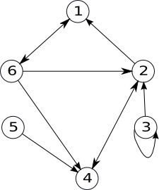Definiție. Se numeşte graf orientat o pereche ordonată de mulțimi notată G=(V, U), unde:
V este o mulțime, finită şi nevidă, ale cărei elemente se numesc noduri sau vârfuri;
U este o familie de perechi ordonate de elemente din V, numită familia de arce.
Această definiție diferă de cea anterioară prin faptul ca acum nu numai că se admit bucle, dar se admit şi mai multe arce identice.
Exemplu:
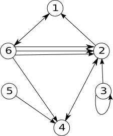Observăm că există trei arce (6,2).
Observație. Dacă într-un graf orientat numărul arcelor identice nu depăşeşte numărul p, atunci se numeşte p-graf. Graful de mai sus este un 3-graf.
Grade
Definiție. Fie G=(V, U) un graf orientat și x un nod al său.
Se numeşte grad exterior al nodului x, numărul arcelor de forma (x,y) (adică numărul arcelor care ies din x), notat d+(x).
Se numeşte grad interior al nodului x, numărul arcelor de forma (y,x) (adică numărul arcelor care intră în x), notat d-(x).
Exemplu:
Pentru graful alăturat:
d+(2)=2
d-(2)=3
Teoremă: Într-un graf orientat, suma gradelor exterioare a tuturor nodurilor este egală cu suma gradelor interioare a tuturor nodurilor și cu numărul de arce.
Un nod x se numește izolat dacă d+(x)=d-(x)=0 (are gradul interior și gradul exterior egal cu 0).
.png)
Reprezentarea grafurilor orientate
Matricea de adiacență
Fie G=(V,U) un graf orientat cu n noduri, în care nu există mai multe arce de la un nod la altul. Matricea de adiacență a grafului este o matrice cu n linii și n coloane și elemente 0 sau 1, astfel:
Ai,j=1 dacă există arcul (i,j)
Ai,j=0 dacă există nu arcul (i,j)
.png)
Pentru graful alăturat, matricea de adiacență este:
0 0 0 0 0 1
1 0 0 1 0 0
0 1 0 0 0 0
0 1 0 0 0 0
0 0 0 1 0 0
1 1 0 1 0 0
Observăm că matricea de adiacență:
** are zero pe diagonală (dacă în graf nu avem bucle)
** nu este simetrică față de diagonala principală
Pentru reprezentarea în memorie vom folosi un tablou bidimensional ale cărui dimensiuni sunt în concordanță cu numărul de noduri din graf.
Considerăm un graf cu maxim 50 de noduri. În C/C++ vom avea declarația:
int A[51][51];
Lista de arce
Lista de arce a unui graf orientat reprezintă o mulțime (familie, dacă arcele se pot repeta) ce conține toate arcele din graf.
.png)
Pentru graful alăturat, lista de arce este:
U={(1,6),(2,1),(2,4),(3,2),(4,2),(5,4),(6,1),(6,4)}
Pentru reprezentarea în memorie putem folosi:
un tablou unidimensional cu elemente de tip struct {int I,J;}
două tablouri unidimensionale cu elemente de tip int
o listă alocată dinamic
etc.
Listele de adiacență
Pentru un graf orientat cu G=(V,U) se va memora numărul de noduri n și apoi, pentru fiecare nod x, lista succesorilor lui x, adică nodurilor y cu proprietatea că există arcul (x,y).
.png)
Pentru graful alăturat, listele de adiacență sunt:
1: 6
2: 1 4
3: 2
4: 2
5: 4
6: 1 2 4
La reprezentarea în memorie trebui avut în vedere că dimensiunile listelor de succesori sunt variabile. De aceea, este neeficientă utilizarea unor tablouri alocate static. Astfel, putem folosi:
un șir de n tablouri unidimensionale alocate dinamic;
un șir de n vectori din STL;
un șir de n liste simplu (dublu) înlănțuite alocate dinamic.
Graf parțial, subgraf
Definiție. Fie G=(V, U) un graf orientat. Se numeşte graf parțial al grafului G, graful orientat G1=(V, U1), unde U1 ⊆ U.
Din definiție rezultă:
Un graf parțial al unui graf orientat G=(V,U), are aceeaşi mulțime de vârfuri ca şi G, iar mulțimea arcelor este o submulțime a lui U sau chiar U.
Fie G=(V, U) un graf orientat. Un graf parțial al grafului G, se obține păstrând vârfurile şi
eliminând eventual nişte arce (se pot elimina şi toate arcele sau chiar nici unul).
Definiție. Fie G=(V, U) un graf orientat. Se numeşte subgraf al grafului G graful orientat G1=(V1,U1) unde V1 ⊆ V iar U1 conține toate arcele din U care au extremitățile în V1.
Din definiție rezultă:
Fie G=(V,U) un graf orientat. Un subgraf al grafului G, se obține ştergând eventual anumite
vârfuri şi odată cu acestea şi arcele care le admit ca extremitate (nu se pot şterge toate vârfurile deoarece
s-ar obține un graf cu mulțimea vârfurilor vidă).
Exemplu:
| Graful inițial | Graf parțial | Subgraf |
| 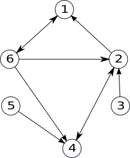 | 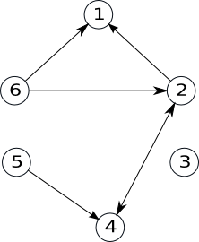 | 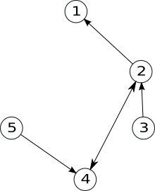 |
S-au eliminat arcele (1,6), (3,2), (6,4) |
S-a eliminat nodul 6 și toate arcele incidente cu el. |
Graf complet. Graf turneu.
Definiție. Fie G=(V, U) un graf orientat. Graful G se numește graf complet dacă oricare două vârfuri
distincte ale sale sunt adiacente.
Două vârfuri x și y sunt adiacente dacă:
între ele există arcul (x,y), sau
între ele există arcul (y,x), sau
între ele există arcele (x,y) şi (y,x).
Exemplu:
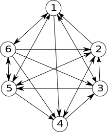Teoremă: Numărul de grafuri orientate complete cu n noduri este 3n*(n-1)/2.
Definiție: Un graf orientat este turneu, dacă oricare ar fi două vârfuri i şi j, i≠j, între ele există un singur arc: arcul (i,j) sau arcul (j,i).
Exemplu:
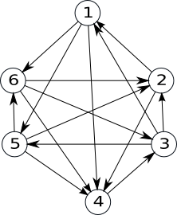Proprietăți:
Orice graf turneu este graf complet.
Avem 2n*(n-1)/2 grafuri turneu cu n noduri.
În orice graf turneu există un drum elementar care trece prin toate vârfurile grafului.
Conexitate
Lanț. Drum
Definiție: Fie G=(V, U) un graf orientat. Se numește lanț, în graful G, o succesiune de arce, notatăL = (u1 , u2 ,..., uk) cu proprietatea ca oricare două arce consecutive au o extremitate comună (nu are importanță orientarea arcelor).
sau
Definiție: Fie G=(V, U) un graf orientat. Se numește lanț, în graful G, o succesiune de noduri, notatăL = (x1 , x2 ,..., xp) cu proprietatea ca oricare două noduri consecutive sunt adiacente.
Lungimea unui lanț este egală cu numărul de arce din care este alcătuit.
Primul nod și ultimul nod dintr-un lanț formează extremitățile lanțului.
Definiție. Fie G=(V, U) un graf orientat. Se numește drum în graful G o succesiune de noduri, notatăD = (x1 , x2 ,..., xk), cu proprietatea că pentru orice 1≤i<k, (xi,xi+1) este arc în G.
Lungimea unui drum este egală cu numărul de arce din care este alcătuit.
Pentru un drum D = (x1 , x2 ,..., xk), nodurile x1 și xk reprezintă extremitățile – inițială, respectiv finală.
Un lanț (drum) se numește elementar dacă în el nu se repetă noduri. Un lanț (drum) se numește simplu dacă în el nu se repetă arce.
.png)
Exemple În graful alăturat:
L=(5,4,2,6,1) este un lanț elementar, dar nu este drum.D=(3,2,1,6,4) este drum elementar.D=(3,2,1,6,2,4) este drum neelementar, dar simplu.
Circuit
Definiție: Se numește circuit un drum simplu în care extremitatea inițială și finală sunt egale. Se numește circuit elementar un circuit în care, cu excepția extremităților, nu se repetă noduri.
Lungimea unui circuit este reprezentată de numărul de arce din care acesta este alcătuit.
.png)
Exemple În graful alăturat:
(1,6,2,1) și (1,6,4,2,1) sunt circuite elementare.
Conexitate. Tare conexitate
Definiții: Fie G=(V,U) un graf orientat.
Graful se numește conex dacă între oricare două noduri distincte există cel puțin un lanț.
Se numește componentă conexă un subgraf conex și maximal cu această calitate – dacă am mai adauga un nod, n-ar mai fi conex.
Graful se numește tare conex dacă între oricare două noduri distincte există cel puțin un drum.
Se numește componentă tare conexă un subgraf tare conex și maximal cu această calitate – dacă am mai adauga un nod, n-ar mai fi tare conex.
Graf hamiltonian. Graf eulerian
Definiții: Fie un graf orientat G=(V,U).
Un drum elementar care conține toate nodurile grafului se numește drum hamiltonian.
Un circuit elementar care conține toate nodurile grafului se numește circuit hamiltonian.
Un graf care conține un circuit hamiltonian se numește graf hamiltonian.
Exemplu: Graful orientat desenat mai jos este hamiltonian, deoarece con ține circuitul hamiltonian (2, 1, 5 , 6, 4, 3, 2).
Definiții: Fie un graf orientat G=(V,U).
Un drum care conține toate arcele grafului se numește drum eulerian.
Un circuit care conține toate arcele grafului se numește circuit eulerian.
Un graf care conține un circuit eulerian se numește graf eulerian.
Teoremă: Un graf fără noduri izolate este eulerian dacă și numai dacă este conex și pentru fiecare nod, gradul interior este egal cu cel exterior.
Exemplu: Graful orientat de mai jos este eulerian.
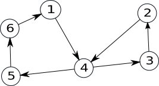Un graf orientat G=(V,E) este tare conex dacă pentru orice pereche de noduri distincte (x,y) există cel puțin un drum de la x la y și există cel puțin un drum de la y la x.
Pentru un graf orientat, se numește componentă tare conexă un subgraf tare conex maximal – prin adăugarea a încă unui nod, subgraful obținut nu mai este tare conex.
Exemplu:
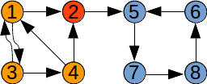Graful de mai sus nu este tare conex. El are trei componente tare conexe.
Verificare tare conexității. Determinarea componentelor tare conexe
Verificare tare conexității unui graf orientat poate fi privită ca un caz particular al determinării componentelor tare conexe, deoarece, dacă graful are o singură componentă tare conexă atunci el este tare conex. În continuare vom vedea două metode de determinare a componentelor tare conexe. Ambele folosesc noțiunea de graf transpus, pe care o definim în continuare:
Definiție: Fie G=(V,E) un graf orientat. Se numește graf transpus al lui G graful orientat GT=(V,ET), cu aceleași mulțimea a nodurilor și pentru orice pereche de noduri are loc: (x,y) este arc în G dacă și numai dacă (y,x) este arc în GT.
Exemplu
| Graf orientat inițial | Graful orientat transpus |
| 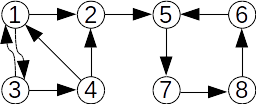 | 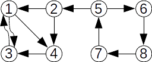 |
Să observăm că pentru două noduri oarecare x, y:
existența unui drum de la x la y poate fi determinată cu o parcurgere (de exemplu în adâncime) în graful G, pornind din nodul x;
existența unui drum de la y la x poate fi determinată cu o parcurgere în graful GT, pornind tot din nodul x.
Algoritmul Plus-Minus
Folosind observații de mai sus, pentru a determina componentele tare conexe folosim următorul algoritm, numit Plus-Minus:
pentru fiecare nod x al grafului care încă nu a fost plasat într-o componentă tare conexă:
determinăm toate nodurile în care se poate ajunge din x, folosind graful G și le marcăm într-un tablou cu plus;
determinăm toate nodurile din care se poate ajunge în x, folosind graful GT și le marcăm într-un tablou cu minus;
nodurile marcate atât cu plus, cât și cu minus, împreună cu x formează o componentă tare conexă;
Exemplu:
Fie graful de mai sus. Să determinăm componenta tare conexă din care face parte nodul 6:
| Graful inițial | Graful transpus |
| 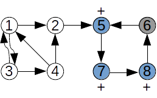 | 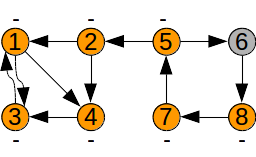 |
S-au marcat cu plus nodurile: 5 7 8 |
S-au marcat cu minus nodurile: 1 2 3 4 5 7 8 |
Nodurile marcate de două ori, 5 7 8, împreună cu nodul inițial, 6, formează o componentă tare conexă.
Secvență C++:
n, a[][] – numărul de noduri și matricea de adiacență
nrc – numărul de componente tare conexe
ctc[] – tablou pentru memorarea componentelor tare conexe: ctc[i] = numărul de ordine al componentei din care face parte nodul i
s[], p[] – tablouri pentru marcare nodurilor vizitate în timpul parcurgerilor
să observăm că graful inițial și cel transpus pot fi memorate prin aceeași matrice de adiacență
void df1(int x)
{
s[x] = 1;
for(int i =1 ; i <= n ; i ++)
if(s[i] == 0 && a[x][i] == 1)
df1(i);
}
void df2(int x)
{
p[x] = 1;
for(int i =1 ; i <= n ; i ++)
if(p[i] == 0 && a[i][x] == 1)
df2(i);
}
int main()
{
.....
for(int i = 1 ; i <= n ; ++i)
if(ctc[i] == 0)
{
for(int j = 1; j <= n ; ++j)
s[j] = p[j] = 0;
nrc ++;
df1(i); df2(i);
for(int j = 1; j <= n ; ++j)
if(s[j] == 1 && p[j] == 1)
ctc[j] = nrc;
}
....
}
Algoritmul lui Kosaraju
Alt algoritm, mai eficient, pentru determinarea componentelor tare conexe este Algoritmul lui Kosaraju.
Să ne amintim că la parcurgerea în adâncime se pot asocia nodurilor două momente de timp:
d[x] – momentul când nodul x este descoperit și adăugat pe stivă: timpul de descoperire a nodului
f[x] – momentul când se termină de vizitat succesorii lui x, iar nodul x se elimină de pe stivă: timpul de finalizare a nodului
Aceste momente de timp vor fi numere naturale între 1 și 2*n, unde n este numărul de noduri din graf.
Algoritmul lui Kosaraju este:
determinăm graful transpus GT
parcurgem în adâncime graful și determinăm pentru fiecare nod x timpul de finalizare f[x]
parcurgem în adâncime graful transpus GT, dar considerăm nodurile în ordinea descrescătoarea timpilor de finalizare
nodurile din arborii de parcurgere obținuți reprezintă câte o componentă tare conexă
Exemplu:
| Graf orientat inițial | Graful orientat transpus |
.png) |
|
În urma parcurgerii în adâncime a grafului inițial G nodurile în ordinea finalizării sunt: 
Parcurgem graful transpus GT analizând nodurile în ordinea inversă a timpilor de finalizare:
începem cu nodul 1; se vizitează nodurile 3 4; se determină componenta tare conexă {1,3,4};
continuăm cu nodul 2 (nodurile 1, 3 și 4 au fost vizitate mai devreme); nu se vizitează alte noduri; se determină componenta tare conexă {2};
continuăm cu nodul 5; se vizitează nodurile 6 8 7; se determină componenta tare conexă {5, 6, 7, 8}.
Secvență C++:
#include <iostream>
#include <fstream>
#include <vector>
using namespace std;
vector<vector<int> > G, GT;
int n , m , contor , nrs;
vector<bool> V;
vector<int> S;
void read()
{
cin >> n >> m;
G = GT = vector<vector<int>>(n + 1);
for(int i = 1 ; i <= m ; i++)
{
int a , b;
cin >> a >> b;
G[a].push_back(b);
GT[b].push_back(a);
}
}
void dfs(int k)
{
V[k] = true;
for(auto x : G[k])
if(!V[x])
dfs(x);
S.push_back(k);
}
void dfsGT(int k)
{
V[k]=1;
for(auto x: GT[k])
if(! V[x])
dfsGT(x);
}
int main()
{
read();
V = vector<bool> (n + 1, false);
for(int i = 1 ; i <= n ; i ++)
if(! V[i])
dfs(i);
V = vector<bool> (n + 1, false);
for(vector<int>::reverse_iterator it = S.rbegin() ; it != S.rend() ; it ++)
if(!V[*it]) {
contor ++;
dfsGT(*it);
}
cout<<contor;
return 0;
}
Complexitatea acestui algoritm este aceea a parcurgerii în adâncime: O(n2) dacă memorăm graful prin matricea de adiacență, O(n+m) dacă memorăm graful prin liste de adiacență.
Fie G=(V,U)G=(V,U) un graf orientat cu nn noduri. Algoritmul Roy-Warshall construiește matricea drumurilor: DD cu nn linii și nn coloane, în care:
Conform definiției de mai sus, în matricea drumurilor, elementele cu indici egali vor avea întotdeauna valoarea 00. Alternativ, putem accepta și elemente Di,i=1Di,i=1, înțelegând prin asta că există un circuit care conține nodul ii.
Pentru a construi această matrice, se pornește de la matricea de adiacență și i se aplică o serie de transformări, pornind de la următoarea idee: dacă nu există drum de la ii la jj, dar există drum de la ii la kk și drum de la kk la jj, atunci va exista și drum de la ii la jj, prin reuniunea celor două drumuri existente.
Mai exact:
inițial avem numai drumurile care nu au noduri intermediare (arcele)
determinăm toate drumurile care îl au eventual ca nod intermediar pe 11
>determinăm toate drumurile care au noduri intermediare numai din mulțimea {1,2}{1,2}
determinăm toate drumurile care au noduri intermediare numai din mulțimea {1,2,3}{1,2,3}
…
pentru un kk oarecare, determinăm toate drumurile care au noduri intermediare numai din mulțimea {1,2,…,k}{1,2,…,k}. Pentru aceasta, vom căuta toate perechile de noduri i,ji,j astfel încât Di,k=1Di,k=1 și Dk,j=1Dk,j=1, de unde va rezulta că și Di,j=1Di,j=1.
Secvența C++
Secvență C++ – elementele de pe diagonală rămân 0:
// a - matricea de adiacență for(int k = 1 ; k <= n ; ++k) for(int i = 1 ; i <= n ; ++i) for(int j = 1 ; j <= n ; ++j) if( i != j && a[i][j] == 0 && a[i][k] == 1 && a[k][j] == 1) a[i][j] = 1;
O variantă mai condensată este următoarea:
// D este matricea de adiacență for(int k = 1 ; k <= n ; ++k) for(int i = 1 ; i <= n ; ++i) for(int j = 1 ; j <= n ; ++j) if( i != j && a[i][j] == 0) a[i][j] = a[i][k] * a[k][j];
Următoarea versiune transformă în 1 și elementele de pe diagonală care corespund unor noduri care fac parte din cel puțin un circuit.
// D este matricea de adiacență for(int k = 1 ; k <= n ; ++k) for(int i = 1 ; i <= n ; ++i) for(int j = 1 ; j <= n ; ++j) if(a[i][j] == 0) a[i][j] = a[i][k] * a[k][j];
Reconstituirea drumurilor
Pentru reconstituirea drumurilor vom folosi atât matricea drumurilor cât și matricea de adiacență. Fie acestea DD, respectiv AA, iar reconstituirea se bazează pe următorul algoritm recursiv, de tip Divide-et-Impera:
reconstituim drumul de la ii la jj – știm că Di,j=1Di,j=1:
dacă există arc de la ii la jj (adică Ai,j=1Ai,j=1 ), atunci acest arc reprezintă și drumul căutat
dacă nu există arc, căutăm un nod k pentru care Di,k=1Di,k=1 și Dk,j=1Dk,j=1 și reconstituim prin apeluri recursive drumurile de la ii la kk și de la kk la jj.
Drumuri de cost minim într-un graf orientat
Fie G=(V,U)G=(V,U) un graf orientat ponderat – în care fiecare arc are asociată o valoare reală numită pondere sau cost, de regulă pozitivă, cu noduri numerotate de la 11 la nn.
Se dorește determinarea pentru fiecare pereche de noduri xx yy, dacă există, a unui drum de cost minim – în care suma costurilor asociate arcelor care definesc drumul este minimă.
Algoritmul pornește matricea costurilor , AA – în care:
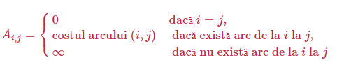În reprezentarea în memorie, ∞∞ va fi înlocuit cu o valoare numerică mare. În C++, aceasta poate fi INF = 0x3F3F3F3F, având următoarele avantaje:
INF se reprezintă în tipul int (pe 32 de biți cu semn) și este mai mare decât 1.000.000.000
suma INF + INF nu depășește limita maximă a tipului int, deci nu va face overflow.
Prin algoritmul Roy-Floyd matricea va fi transformată, astfel încât la final va avea următoarea semnificație:
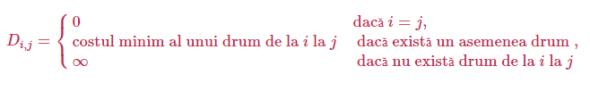Justificare algorimului
Pentru graful G=(V,U)G=(V,U) , cu noduri numerotate de la 11 la nn, considerăm funcția costMin(i,j,k)costMin(i,j,k), reprezentând pentru fiecare pereche de noduri i,ji,j costul minim al unui drum de la ii la jj având noduri intermediare numai din mulțimea 1,2,…,k1,2,…,k. Atunci, problema revine la a determina pentru fiecare pereche de noduri i,ji,j valoarea costMin(i,j,n)costMin(i,j,n).
Pentru fiecare pereche i,ji,j, costMin(i,j,0)=costul arcului (i,j)costMin(i,j,0)=costul arcului (i,j), – drumul de la ii la jj nu conține noduri intermediare, iar pentru un kk oarecare, costMin(i,j,k)costMin(i,j,k) poate fi una dintre următoarele valori:
drumul de la ii la jj nu trece prin nodul kk: costMin(i,j,k−1)
drumul de la ii la jj trece prin nodul kk – de la ii la kk și de la kk la jj, cu noduri intermediare din mulțimea 1,2,…,k−11,2,…,k−1: costMin(i,k,k−1)+costMin(k,j,k−1)costMin(i,k,k−1)+costMin(k,j,k−1).
Atunci, pentru fiecare costMin(i,j,k)costMin(i,j,k) se va alege minimul dintre cele două valori de mai sus: costMin(i,j,k)=min(costMin(i,j,k−1),costMin(i,k,k−1)+costMin(k,j,k−1))costMin(i,j,k)=min(costMin(i,j,k−1),costMin(i,k,k−1)+costMin(k,j,k−1)).
Această formulă este cheia algoritmului Roy-Floyd. Algoritmul determină mai întâi costMin(i,j,1)costMin(i,j,1), pentru toate perechile i,ji,j, apoi costMin(i,j,2)costMin(i,j,2), apoi costMin(i,j,3)costMin(i,j,3), etc.
Secvență C++
//D[][] este inițial matricea costurilor arcelor for(int k = 1 ; k <= n ; k ++) for(int i = 1 ; i <= n ; i ++) for(int j = 1 ; j <= n ; j ++) if(D[i][j] > D[i][k] + D[k][j]) D[i][j] = D[i][k] + D[k][j];
Algoritmul lui Dijkstra determină pentru un nod dat într-un graf orientat cu costuri costurile minime ale drumurilor care au acel nod ca extremitate inițială.
Mai precis, pentru un nod s – sursă, algoritmul determină pentru orice nod x costul minim al unui drum de la s la x.
Strategia algoritmului lui Dijkstra este una de tip Greedy:
se menține un tablou d[], în care d[x] reprezintă costul minim curent (eventual infinit) al unui drum de la s la x;
se menține o mulțime F de noduri k pentru care s-a determinat costul minim final d[k]
inițial în F se adaugă doar nodul s, pentru care d[s]=0; pentru nodurile x adiacente cu s, d[x]=c[s,x], unde c[x,y] este costul arcului (x,y), iar pentru celelalte noduri costul d[] se inițializează cu INFINIT;
în mod repetat:
-alegem un nod din afara mulțimii F, nodul k pentru care costul drumului d[k] este minim și finit;
-adăugăm nodul găsit k în F;
-pentru fiecare arc (k,x) cu x din afara mulțimii F stabilim dacă acest arc se îmbunătățește costul d[x] (arcul relaxează drumul);
alegerea acestor noduri se termină când toate nodurile au fost adăugate în F (s-au determinat costurile drumurile de la s la fiecare nod al grafului) sau când nu mai există noduri x din afara mulțimii F pentru care d[x] este finit;
Exercițiu
Aplicați algoritmul lui Dijkstra pentru graful de mai jos și s=1:
Secvență C++
În secvența de mai jos, considerăm un garf orientat cu în noduri, reprezentat prin matricea de adiacență a[][], în care a[i][j]=INFINIT dacă nu există arcul (i,j).
#define INFINIT 1000000000
...
//nodul sursa este s
...
for(i =1 ; i <= n ; i ++ )
{
f[i] = 0;
d[i] = a[s][i];
}
f[s] = 1, d[s] = 0;
d[0] = INFINIT; // pentru determinarea nodului cu costul minim
for(int k = 1 ; k < n ; ++k)
{
int pmax = 0;
for(i = 1 ; i <= n ; ++i)
if(f[i] == 0 && d[i] < d[pmax])
pmax = i;
if(pmax > -1)
{
f[pmax] = 1;
for(i = 1; i <= n ; ++i)
if(f[i] == 0 && d[i] > d[pmax] + a[pmax][i])
d[i] = d[pmax] + a[pmax][i];
}
}
Considerăm un graf neorientat ponderat (cu costuri) conex G. Se numește arbore parțial un graf parțial al lui G care este arbore. Se numește arbore parțial de cost minim un arbore parțial pentru care suma costurilor muchiilor este minimă.
Dacă graful nu este conex, vorbim despre o pădure parțială de cost minim.
Algoritmul lui Prim permite determinarea unui arbore parțial de cost minim (APM) într-un graf ponderat cu N noduri.
Descrierea algoritmului
Determinarea APM-ului se face astfel:
se stabilește un nod de plecare; acesta va fi rădăcina arborelui, care se va crea pas cu pas, prin adăugarea de noi noduri;
în mod repetat:
se alege un nod neadăugat încă în arborele curent pentru care muchia dintre el și un nod din arbore are cost minim;
se adăugă nodul în arbore;
când nu se mai poate face alegerea unui asemenea nod, fie au fost adăugate toate nodurile, fie graful nu este conex și au fost adăugate în arbore toate nodurile din componenta conexă a nodul inițial;
dacă graful nu este conex, continuăm cu următoarea componentă conexă.
Observație: arborele parțial de cost minim al unui graf neorientat nu este unic, însă toate APM-urile vor avea același cost.
Considerăm un graf neorientat ponderat (cu costuri) conex G. Se numește arbore parțial un graf parțial al lui G care este arbore. Se numește arbore parțial de cost minim un arbore parțial pentru care suma costurilor muchiilor este minimă.
Dacă graful nu este conex, vorbim despre o pădure parțială de cost minim.
Algoritmul lui Kruskal permite determinarea unui arbore parțial de cost minim (APM) într-un graf ponderat cu N noduri.
Descrierea algoritmului
Pentru a determina APM-ul se pleacă de la o pădure formată din N subarbori. Fiecare nod al grafului reprezintă inițial un subarbore. Aceștia vor fi reuniți succesiv prin muchii, până când se obține un singur arbore (dacă graful este conex) sau până când acest lucru nu mai este posibil (dacă graful nu este conex).
Algoritmul este:
se ordonează muchiile grafului crescător după cost;
se analizează pe rând muchiile grafului, în ordinea crescătoare a costurilor;
pentru fiecare muchie analizată:
dacă extremitățile muchiei fac parte din același subarbore, muchia se ignoră
dacă extremitățile muchiei fac parte din subarbori diferiți, aceștia se vor reuni, iar muchia respectivă face parte din APM.
Principala dificultate în algoritmul descris mai sus este stabilirea faptului că extremitățile muchiei curente fac sau nu parte din același subarbore. În acest scop vom stabili pentru fiecare subarbore un nod special, numit reprezentant al (sub)arborelui și pentru fiecare nod din graf vom memora reprezentantul său (de fapt al subarborelui din care face parte) într-un tablou unidimensional.
Pentru a stabili dacă două noduri fac sau nu parte din același subarbore vom verifica dacă ele au același reprezentant. Pentru a reuni doi subarbori vom înlocui pentru toate nodurile din subarborele B cu reprezentantul subarborelui A.
Înlocuirile descrise mai sus sunt simple dar lente. Pentru o implementare mai eficientă a algoritmului se poate folosi conceptul de Padure de mulțimi disjuncte, descris în acest articol.
Secvență C++
Următoarea secvență determină costul total al APM-ului, folosind algoritmul lui Kruskal. Presupunem că graful are cel mult 100 de noduri.
struct muchie{ int i,j,cost; }; int n , m , t[101]; muchie x[5000]; int main() { cin >> n >> m; for(int i = 0 ; i < m ; ++i) cin >> x[i].i >> x[i].j >> x[i].cost; //sortare tablou x[] după campul cost // ... de completat //initializare reprezentanti for(int i =1 ; i <= n ; ++i) t[i] = i; //determinare APM int S = 0, cnt = 0; for(int i = 0 ; i < m && cnt < n ; i ++) if(t[x[i].i] != t[x[i].j]) // extremitatile fac parte din subrabori diferiti { S += x[i].cost; //reunim subarborii int ai = t[x[i].i], aj = t[x[i].j]; for(int j =1 ; j <= n ; ++j) if(t[j] == aj) t[j] = ai; } cout << S << "\n"; return 0; }
Arbore liber
Un arbore este un graf conex și aciclic. Se mai numește și arbore liber.
Următoarele propoziții sunt adevărate:
Un arbore cu n vârfuri are n-1 muchii.
Un arbore este un graf conex și minimal cu această proprietate; dacă s-ar mai elimina o muchie, graful nu ar mai fi conex.
Un arbore este un graf aciclic și maximal cu această proprietate; dacă s-ar mai adăuga o muchie, s-ar obține un ciclu.
Între oricare două vârfuri ale unui arbore există un lanț elementar unic.
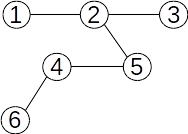Arbori cu rădăcină
Pentru un arbore se poate stabili un nod special, numit rădăcină. Putem spune că “agățăm” arborele în rădăcină, iar restul nodurilor cad.
Mai jos avem trei arbori cu rădăcină. Toți pornesc de la arborele de mai sus, dar diferă prin alegerea rădăcinii.
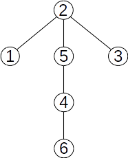 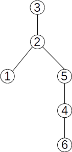 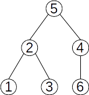Terminologie
Fie un arbore cu rădăcina r și x un nod în acest arbore. atunci:
se numește ascendent al lui x orice nod y, diferite de x, aflat pe lanțul de la rădăcină la x;
rădăcina nu are ascendenți;
rădăcina este ascendent pentru toate nodurile din arbore;
dacă y este ascendent al lui x și există muchia (y,x), atunci y se numește ascendent direct al lui x sau tatăl lui x;
rădăcina este singurul nod din arbore care nu are tată;
un nod y este descendent al nodului x, diferit de y, dacă x aparține lanțului de la r la y;
dacă în plus există muchia (x,y), atunci y este descendent direct sau fiu al lui x;
un nod care nu are niciun descendent se numește frunză;
două noduri care au același tată se numesc frați;
lungimea unui lanț de la rădăcina arborelui la un nod x reprezintă nivelul sau adâncimea nodului x;
lungimea maximă a unui lanț de la rădăcină la un nod al arborelui reprezintă înălțimea arborelui;
un nod al arborelui împreună cu toți descendenții săi formează un subarbore;
Exemplu
Fie arborele următor:
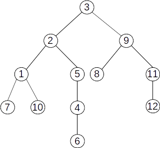rădăcina arborelui este nodul 3;
ascendenții nodului 4 sunt 5, 2 și 3. Ascendentul direct (tatăl) al nodului 4 este nodul 5;
descendenții nodului 2 sunt 1 7 10 5 4 6. Descendenții direcți ai nodului 2 sunt 1 5;
nodurile 1 și 5 sunt frați;
nodurile 6 7 8 10 12 sunt frunze;
descompunerea pe niveluri:
Nivelul 0 conține doar rădăcina: 3;
Nivelul 1 conține nodurile 2 9;
Nivelul 2 conține nodurile 1 5 8 11;
Nivelul 3 conține nodurile 7 10 4 12;
Nivelul 4 conține nodul 6;
Înălțimea arborelui este 4;
Nodurile 9 8 11 12 formează un subarbore;
Reprezentarea arborilor
Reprezentarea prin referințe descendente
Pentru fiecare nod al arborelui se memorează informații despre descendenții săi direcți. Este similară cu reprezentarea prin liste de adiacențe a grafurilor. Pentru arborele de mai sus avem:
F[1]={7,10}
[2]={1,5}
F[3]={2,9}
F[4]={6}
F[5]={4}
F[6]={}
F[7]={}
F[8]={}
F[9]={8,11}
F[10]={}
F[11]={12}
[12]={}
Reprezentarea prin referințe ascendente
Pentru fiecare nod se memorează informații despre ascendenții direcți. Vom obține un vector de tați, în care:
t[r] = 0, unde r este rădăcina arborelui
t[k] = tatăl nodului k
Pentru arborele de mai sus avem:
k |
1 |
2 |
3 |
4 |
5 |
6 |
7 |
8 |
9 |
10 |
11 |
12 |
t[k] |
2 |
3 |
0 |
5 |
2 |
4 |
1 |
9 |
3 |
1 |
9 |
11 |
Observații
În vectorul de tați există o singură valoare 0, corespunzătoare rădăcinii;
Frunzele corespund valorilor care nu apar în vectorul de tați.
Vectorul de tați ne permite să determinăm lanțuri în arbore, de la un nod oarecare spre rădăcină:
Pornim de la un nod dat x
Identificăm tatăl lui x, y = t[x];
Identificăm tatăl lui y, t[y]
ș.a.m.d.
Ajungem într-un nod z pentru care t[z]=0. acesta va fi rădăcina și ne oprim.